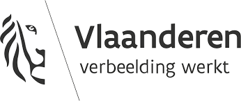
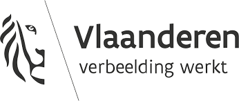
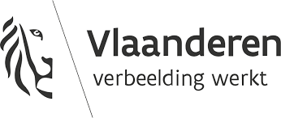

Jelle Spoelders
Senior Java Developer
helping businesses create top-quality solutions and deliver value faster and more consistently.
 


helping businesses create top-quality solutions and deliver value faster and more consistently.

Who Am I ?
I am a senior Java developer with 7 years of experience working for large-scale organizations in banking, government and logistics. Within these industries, I led multiple agile development teams through my role as lead developer. Optimizing team performance and increasing the quality of deliverables are two key components in my day-to-day work.
I specialize in developing containerized Java back-end solutions to support business processes, with a focus on the complete development workflow and DevOps principles. My skill set ranges from core Java-based software development to setting up CICD pipelines and configuring container platforms like Kubernetes. With this combined knowledge, I help my clients develop top-quality solutions, deliver business value faster and reduce operational costs, resulting in shorter feedback loops and smoother operations.
My rich experience has provided me with a deep understanding of the unique challenges faced in complex software environments, such as those associated with distributed computing, asynchronous communication, evolving API design and high availability. I understand the importance of supporting and improving mission-critical business processes through my work, and strive to create solutions that are both efficient and effective, meeting both functional and non-functional requirements.
What Do I Do ?

Developing software that advances your business is at the core of what I do. My expertise revolves around Java, but I’m proficient with numerous other tools and technology stacks. I can deliver solutions from beginning to end; from design to production deployment.
With 7 years of experience writing Java code, I can provide valuable insights into your current solution. Think about identifying how maintainable your software is, how your code can be optimized to increase its quality, how you can improve your testing strategy and more.


Architectural choices have a significant impact on the future development effort, complexity and flexibility of your solution. As such, they require thoughtful consideration. I can help you evaluate the impact of design choices and document them in a way that reflects your well-founded decision-making process.
My Core Skills
Java
Spring
JPA / Hibernate
REST API design
Docker
Kubernetes
DevOps
Agile
I Am Also Experienced At
PostgreSQL
Gherkin / Cucumber
Domain-Driven Design
TypeScript

Angular
Microsoft Azure
BPMN / Camunda
My Work
Vanderlande's Warehouse Platform enables customers to automate their warehouse in a resilient and scalable way. It consists of a modular architecture based on the principles of Domain-Driven Design, allowing for a broad range of use cases. With the STOREPICK offer, Vanderlande leverages its platform to deliver a robotized, end-to-end automated case picking (ACP) warehouse solution that allows clients to optimize the processes of their entire value chain. It effectively handles both incoming and outgoing goods, and guarantees store-friendly deliveries across multiple store formats.
↣ See moreThe Flemish government's Sociale Kaart gives every citizen insight into the available healthcare in Flanders and Brussels. It's a data-driven platform that automatically aggregates data from various sources and facilitates intelligent and complex searches. This platform serves as a central data vault.
↣ See moreING's Developer Portal performs API management, authorization and access control for both internal and external systems. It's their main tool to comply with the European PSD2 directive, allowing third parties to onboard and start using ING's APIs within seconds.
↣ See moreThrough Open Banking, Yolt empowers its users to be smarter with their money. It enables consumers to view their accounts in one place, with easy budgeting and bill tracking. By using the Yolt for Business API, other parties can leverage their expertise and capabilities.
↣ See moreWhat Do Others Say About Me?

Jelle is very good at picking up complex topics and working through them systematically without much fuss. He is also willing to take on his responsibility as a lead software developer, contributing to robust conversations when required.
Bernard Visagie
Senior Test Automation Engineer

Jelle possesses a lot of knowledge and understands the tricks of the trade. He is capable and good at finding solutions, but also at helping other developers implement them.
Daniël de Jong-Veldstra
Senior Java Developer

One of the stronger technical profiles. Proactive and takes clear initiative. No 9 to 5 mentality, aims for results.
Alex Vanlerberghe
Enterprise Architect

Knows how to deal with complex problems and asks the right questions.
Arne De Cock
Senior Java Developer

Technically very strong. Great analytical thinking skills. Very broad knowledge covering different areas of expertise such as networking, security and testing. Analyzes complex problems very quickly and suggests fitting solutions. Expert in Kubernetes and Docker.
Steve Lievens
Senior .NET Developer

He was quick to accumulate the necessary knowledge in order to be productive and has made constant and visible progress the entire time he worked with us. Jelle was reliable and could be counted on to complete his tasks or to help others.
Florin Manaila
Senior Java Developer

He strikes a good balance between quality and effectiveness, allowing him to concentrate on the critical parts.
Frank Thiele

Incredibly broad knowledge. Expert in several areas who is willing to take the time to share his expertise with others.
Sige Van Vynckt
Java Developer
Articles, Guides and Tutorials
How to deploy and run a WordPress-based website or blog in Docker with fully automated TLS certificate rotation through Let's Encrypt.
↣ Read moreGet in Touch With Me